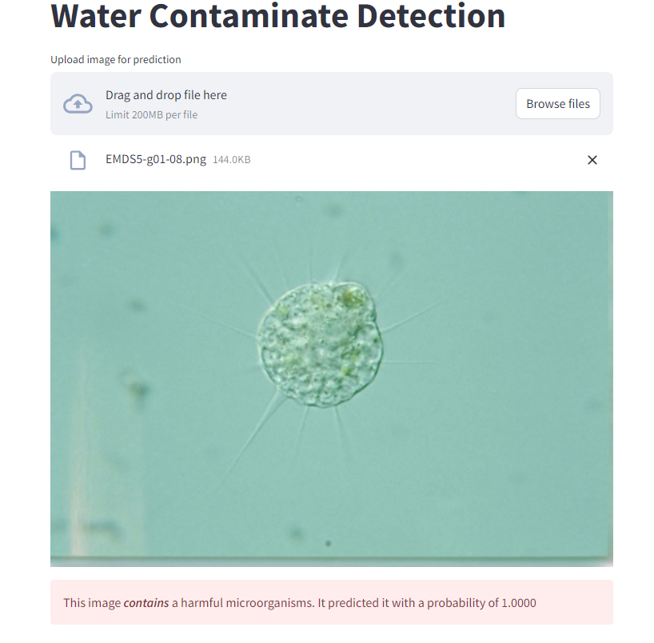
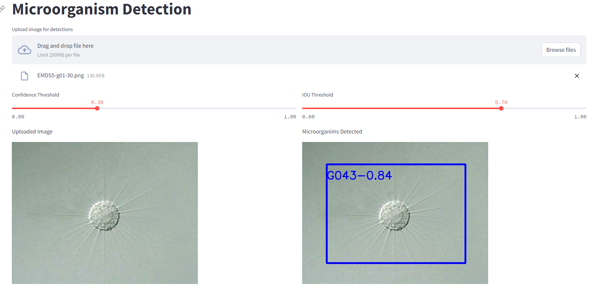

Microorganism Detection in Water
- Tech Stack: YOLOv8,Detectron2,Streamlit
- Github URL: Project Link
-
Project sample:
YOLO response on EM image is harmful or harmless.  Detectron response for which type of EM class found in the image. 
Problem Identification
▪ 7.5 million waterborne illnesses occur annually with $3.3 billion healthcare cost
▪ Traditional laboratory test: expensive,time-consuming
Project Goals
▪ Create a low-cost method that is easy to access and easy to use for detecting microorganisms in drinking water.
▪ Train a CNN (or equivalent) on the EMDS Dataset to recognize and classify microorganisms using Computer Vision techniques.
▪ Use inexpensive microscopes of different magnifications(140x, 400x, 1000x) to find the best for the task.
▪ Deploy the trained and tested model on a mobile phone.